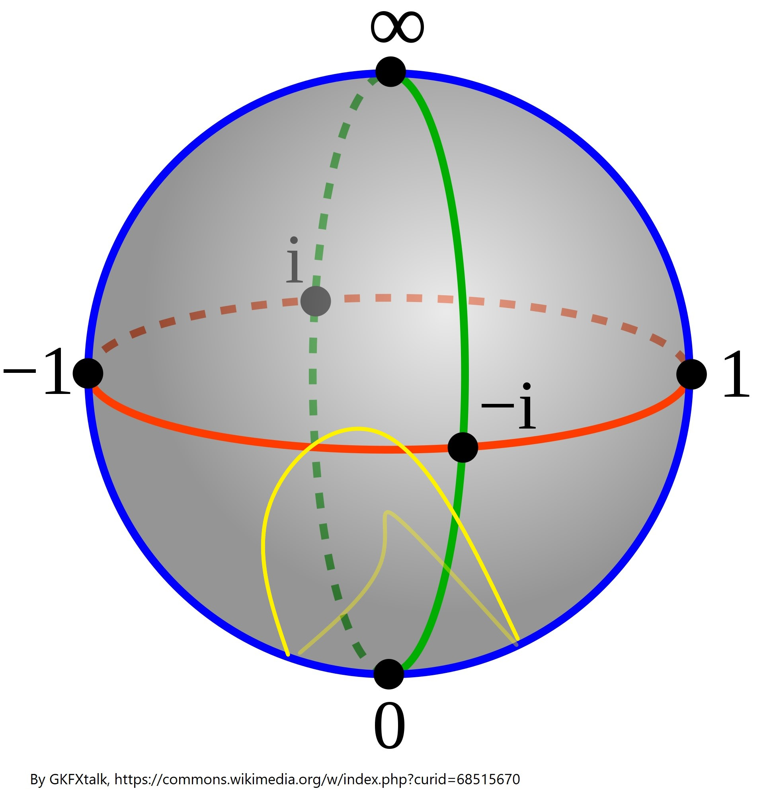
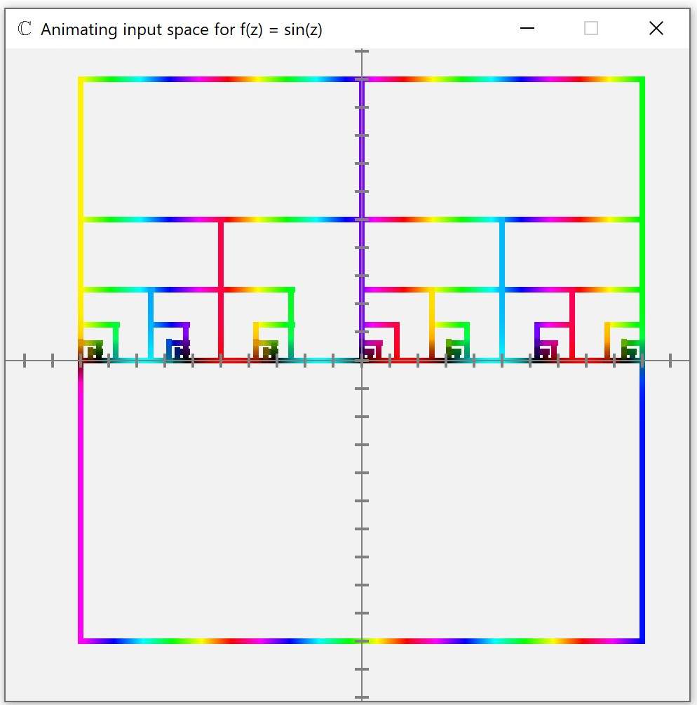

Draw any closed shape on the complex plane. Now imagine you are a little human, walking along that shape. What you will notice, is that if the point 0 is inside of the shape you are traveling along, then making one full lap will cause you to make a non-zero amount of turns around that point. You can caluclate this by integrating over the shape, or (which is much easier) calculate the total phase change, counting the change in the opposite direction with an opposite sign. This is exactly what the winding number algorithm does.
The only difference is, it doesn't choose the shape at random. It draws a sqare in the input space (see article "Complex functions"), which then gets mapped to the output space. If there is a zero inside this mapped shape, then there must be a point inside of the rectangle such that the function at that point evaluates to zero - a root, and roots are what we are trying to find.
The algorithm then calculates the winding number (by calculating total phase change when traveling along the mapped rectangle). It is non-zero, that means there is a zero inside the mapped shape, so there must be a root inside the square. The algorithm then splits the square into four and checks each one the same way, splitting it into four or discarding it if the winding number is 0. It stops when the area of the square is sufficiently small (this is determined by the provided accuracy, see article "Accuracy options") and adds its middle to the list of solutions.
There are problems with this algorithm, which stem from the oddities discussed in the "Riemann sphere" article. Mainly, if both a root and a pole of a function end up in one square, then it's winding number will evaluate to 0 and the square will be discarded, even though there is a perfectly good root inside. The algorithm also treats individual poles as zeros, although it checks if the value of the function at a point is actually small before adding it to the list of solutions.
The video that inspired us - by 3Blue1Brown on YouTube